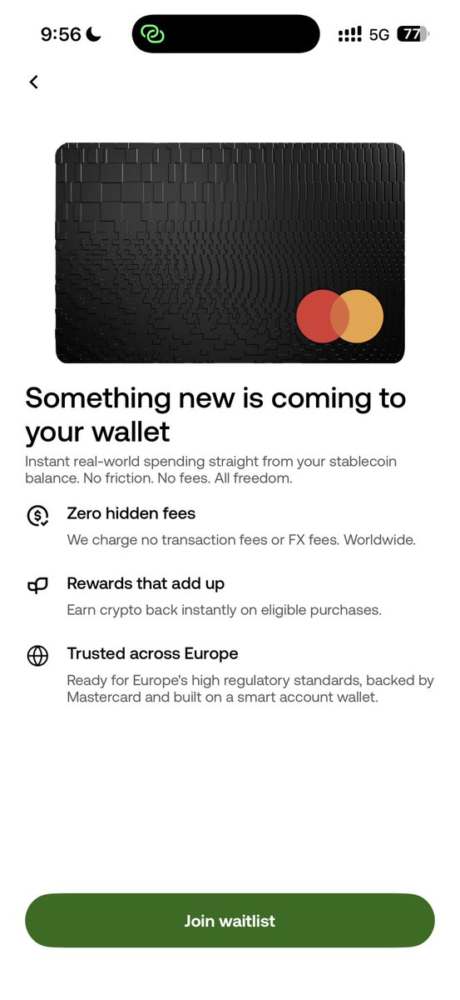
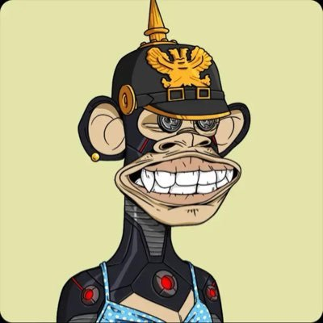

奶昔🥤
@realNyarime
OKX也有卡了，币安也支持美元汇款了。未来是不是就不用去担心出金问题了？
感觉万事达是一家很伟大的公司，除了跟VISA一样政治正确不让我买旮旯给木，其他都很棒！

奶昔🥤
@realNyarime
OKX也有卡了，币安也支持美元汇款了，越来越便利了
未来可能就不用去担心出金问题了 https://t.co/QsdnALCu0a

Star
@star_okx
OKX Pay and Card will soon be available across 30 EEA countries. We look forward to hearing your feedback as we continue to improve the product. https://t.co/o4H89PgfHU